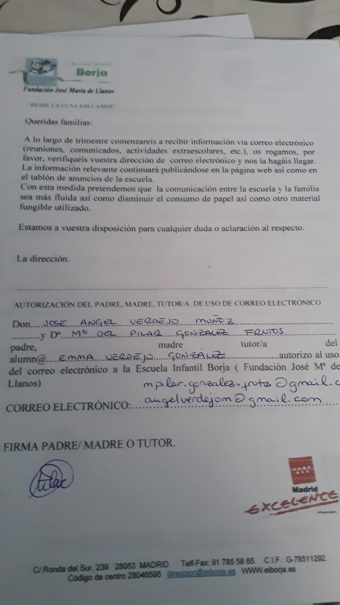
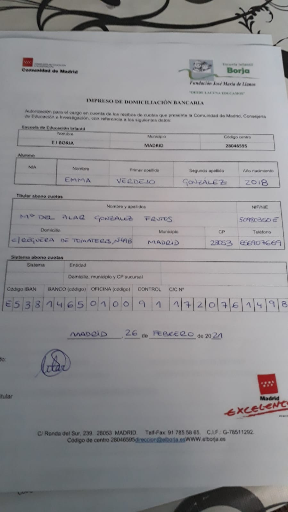
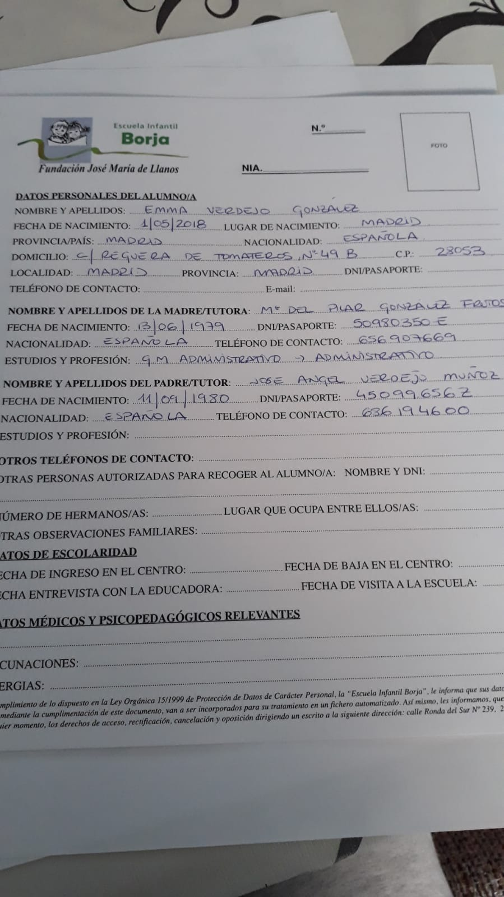
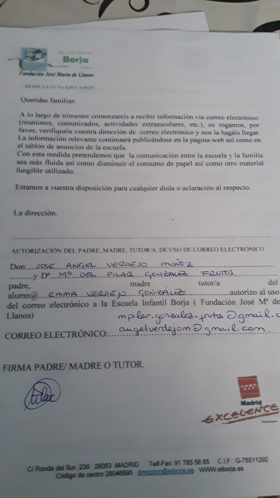
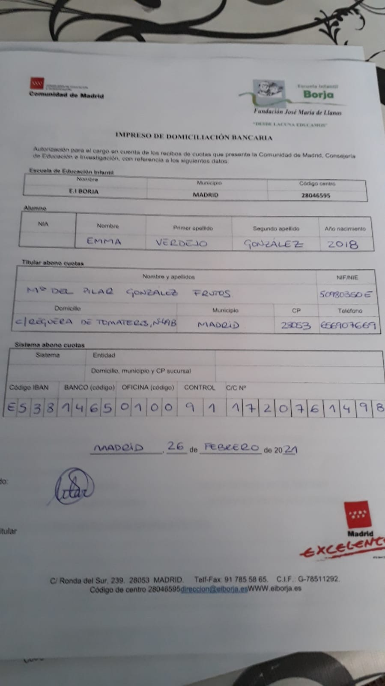
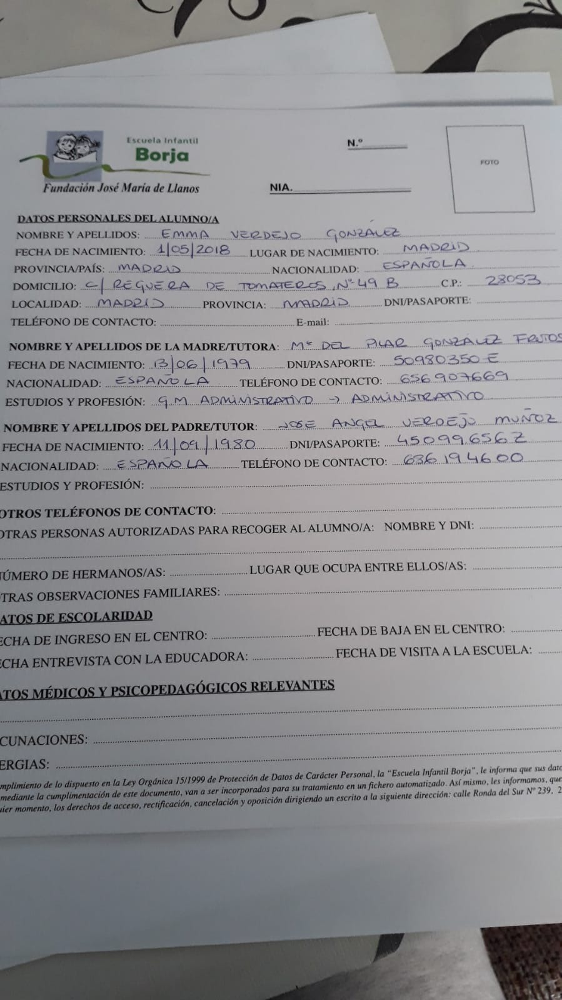

Entregado por mi:
2 fotos tamaño cartera
 
Entrevista con educadora 1 de marzo E.I.Borja
La clase es de unos quinco o veinte niños, que van todos pero suelen faltar, como es habitual en peques.
De las compras la madre manifestó que se hacía cargo, a pesar de que yo me ofrecí a que necesitara algo.
Reunión 26 febrero E.I.Borja
Su educadora-profesora es Silvia
Comenzaría el martes 2 de marzo.
Recomendable dos semanas de adaptación horaria, sin el horario ampliado.
Pago comedor 96€
Formalización de matrícula
10 de febr. 2021
-Esta deuda te comprometiste a través de tu abogado a afrontar la misma. Es importante liquidar este cargo para que no haya problemas a la hora de matricular a Emma en la nueva guardería. Desde el mes de Diciembre estoy yo haciendo frente al pago íntegro de la cuota de la guardería.
26 febrero
-Como manifesté a tu abogada a través de mi abogado, no había ningún inconveniente en regularizar esto siempre que asegurases que Emma no dejara de ir a la guardería por decisión unilateral tuya. Sin embargo, esto es lo que ha pasado desde septiembre 2020, sin que me informaras ni permitieses participar en esa decisión.
Llamada 4 febrero Los Delfines
los niños no se mezclan entre clases, salvo los madrugadores.
al patio de manera individual, cambio de zapatos dentro de la guarde, ropa no se queda allí.
Cambio a colegio:
El sistema va por puntos y rentas.
Recomendable buscar la comodidad para la pequeña, escoger un par de sitios y si no funciona cambiar en segundo curso.
Llamada 4 febrero Los Delfines
VALLECAS: MadridSur, Palomeras-Vallecas y Tolosa Latur
Llamada 4 febrero El Cuquillo
ALCOBENDAS: Muy solicitado el García Lorca por ser el primero bilingüe. Es bueno el Emilio Casado
sábado, 19 de dic. de 2020 11:40
Grupos de 12 o 14 niños. Salen en grupos de 8.
Rutina de lavarse las manos al volver de la calle. Se lavan las manos con una manopla
Usan el dosificador del jabón.
Dudas: pañales, aviso de caca, water? Celia no lleva pañal
Ponerse sola los zapatos. La ropa, el abrigo tumbado en el suelo...
Autocontrol. Autonomía
viernes, 4 de sept. de 2020 10:03
llevar a los niños a la guardería en días alternos o 2 días sí y 2 días no
La clase de Emma este año será la que está enfrente de donde la dejaba el año pasado. Su profe es Marga y le ayudarán Cristina y una nueva Cristina como soporte.
Educación. Yo quiero educar a Emma, participar en su vida y no sólo pasar el rato con ella.